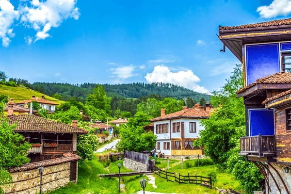

Rural tourism has become increasingly popular in Bulgaria as travelers seek more authentic and peaceful experiences away from large cities and busy resorts. The countryside offers visitors a chance to explore traditional villages, scenic landscapes, and local customs that have been preserved for generations.
Many Bulgarian villages still maintain traditional architecture from the Bulgarian National Revival period. These houses often feature wooden balconies, colorful facades, and stone foundations. One well known example is the historic village of Koprivshtitsa, which has preserved its traditional homes and cultural heritage.
Visitors to rural areas can experience everyday village life, enjoy homemade food, and learn about traditional crafts and agricultural practices. Activities such as horseback riding, hiking, and visiting local farms are common experiences offered through rural tourism.
This type of tourism allows visitors to connect more closely with Bulgarian culture while supporting small communities that maintain the country’s traditions.